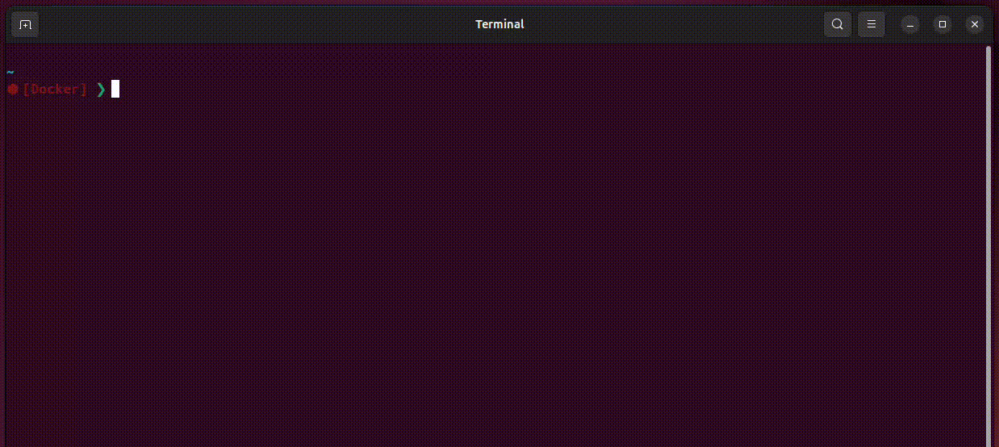
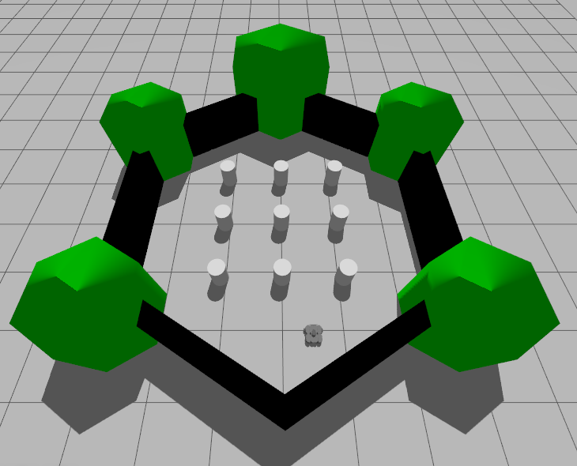
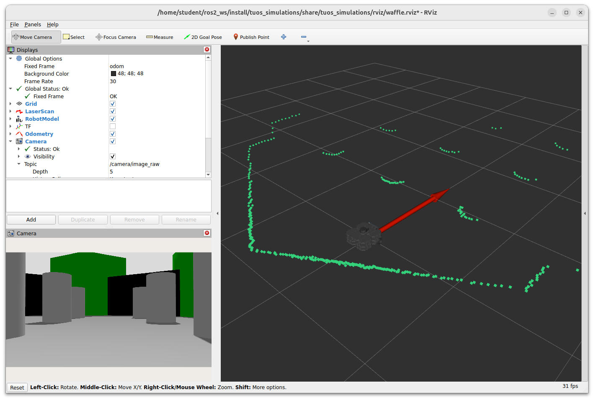
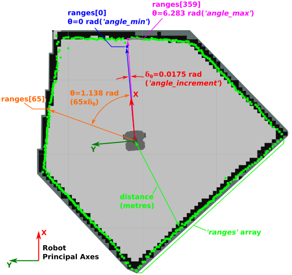
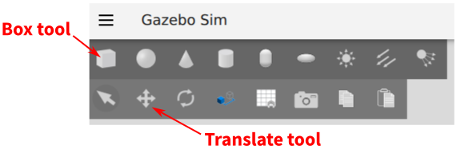
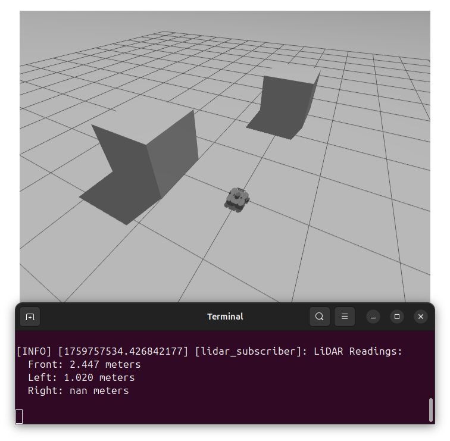
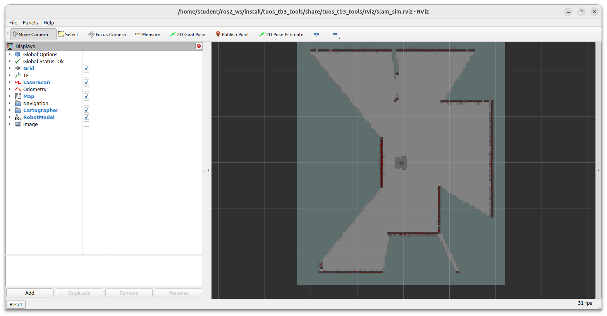
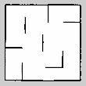

Lab 3: Beyond the Basics
Introduction¶
In this part of the course we'll look at some more advanced ROS concepts, and explore another of our robot's on-board sensors: the LiDAR sensor. From the work you did in Part 2 you may have started to appreciate the limitations associated with using odometry data alone as a feedback signal when trying to control a robot's position in its environment. The LiDAR sensor can provide further information about an environment, thus enhancing a robot's knowledge and capabilities. To begin with however, we'll look at how to launch ROS applications more efficiently with launch files, and how the behaviour of nodes can be changed dynamically using parameters.
Getting Started¶
Step 1: Launch your ROS 2 Environment
You should now have access to ROS 2 via a Linux terminal instance. We'll refer to this terminal instance as TERMINAL 1.
Step 2: Launch VS Code
It's also worth launching VS Code now, so that it's ready to go for when you need it later on.
Step 3: Make Sure The Course Repo is Up-To-Date
In Lab 1 you should have downloaded and installed The Course Repo into your ROS environment. If you haven't done this yet then go back and do it now. If you have already done it, then it's worth just making sure it's all up-to-date, so run the following command in TERMINAL 1 now to do so:
Then build with Colcon:
And finally, re-source your environment:
Warning
If you have any other terminal instances open, then you'll need run source ~/.bashrc in these too, in order for any changes made by the Colcon build process to propagate through to these as well.
Launch Files¶
So far (in Parts 1 & 2) we've used the ros2 run command to execute a variety of ROS nodes, such as teleop_keyboard, as well as a number of nodes that we've created of our own. You may also have noticed that we've used a ros2 launch command now and again too, mainly to launch Gazebo Simulations of our robot, but why do we have these two commands, and what's the difference between them?
Complex ROS applications typically require the execution of multiple nodes at the same time. The ros2 run command only allows us to execute a single node, and so this isn't that convenient for such complex applications, where we'd have to open multiple terminals, use ros2 run multiple times and make sure that we ran everything in the correct order without forgetting anything! ros2 launch, on the other hand, provides a means to launch multiple ROS nodes simultaneously by defining exactly what we want to launch within launch files. This makes the execution of complex applications more reliable, repeatable and easier for others to launch these applications correctly.
Exercice 1: Creating a Launch File¶
In order to see how launch files work, let's create some of our own!
In Part 1 we created publisher.py and subscriber.py nodes that could talk to one another via a topic called /my_topic. We launched these independently using the ros2 run command in two separate terminals. Wouldn't it be nice if we could have launched them both at the same time, from the same terminal instead?
To start with, let's create another new package, this time called part3_beyond_basics.
-
In TERMINAL 1:
-
Head to the
srcfolder of the ROS 2 workspace: -
Clone the ROS 2 Package Template:
-
Run the
init_pkg.shscript from within this template to initalise a package with the name "part3_beyond_basics": -
And navigate into the root of this new package, using
cd:
-
-
Launch files should be located in a
launchdirectory at the root of the package directory, so usemkdirto do this: -
Use the
cdcommand to enter thelaunchfolder that you just created:...and then use the
touchcommand to create a new empty file calledpubsub.launch.py: -
Open this launch file in VS Code and enter the following:
pubsub.launch.pyfrom launch import LaunchDescription # (1)! from launch_ros.actions import Node # (2)! def generate_launch_description(): # (3)! return LaunchDescription([ # (4)! Node( # (5)! package='part1_pubsub', # (6)! executable='publisher.py', # (7)! name='my_publisher' # (8)! ) ])- Everything that we want to execute with a launch file must be encapsulated within a
LaunchDescription, which is imported here from thelaunchmodule. - In order to execute a node from a launch file we need to define it using the
Nodeclass fromlaunch_ros.actions(not to be confused with the ROS Action communication method covered in Part 5!) - We encapsulate a Launch Description inside a
generate_launch_description()function. - Here we define everything that we want this launch file to execute: in this case a Python list
[]containing a singleNode()item (for now). - Here we describe the node that we want to launch.
- The name of the package that the node is part of.
- The name of the actual node that we want to launch from the above package.
-
A name to register this node as on the ROS network. While this is also defined in the node itself:
...we can override this here with something else.
- Everything that we want to execute with a launch file must be encapsulated within a
-
We need to make sure we tell
colconabout our newlaunchdirectory, so that it can build the launch files within it when we runcolcon build. To do this, we need to add a directory install instruction to our package'sCMakeLists.txt:Open up the
CMakeLists.txtfile and add the following text just above theament_package()line at the very bottom: -
Now, let's build the package using the three-step process that you'll be becoming familiar with by now...
-
Navigate back to the root of the ROS 2 workspace:
-
Run
colcon buildon your new package only: -
And finally, re-source the
.bashrc:
-
-
Use
ros2 launchto launch this file and test it out as it is: -
The code (as it is) will launch the
publisher.pynode from thepart1_pubsubpackage, but not thesubscriber.pynode. We therefore need to add anotherNode()object to ourLaunchDescription:pubsub.launch.pyfrom launch import LaunchDescription from launch_ros.actions import Node def generate_launch_description(): return LaunchDescription([ Node( package='part1_pubsub', executable='publisher.py', name='my_publisher' ), Node( # TODO: define the subscriber.py node... ) ])Using the same methods as above, add the necessary definitions for the
subscriber.pynode into your launch file. -
Once you've made these changes you'll need to run
colcon buildagain.Warning
You'll need to run
colcon buildevery time you make changes to a launch file, even if you use the--symlink-installoption (as this only applies to nodes in thescriptsdirectory) -
Once you've completed this, it should be possible to launch both the publisher and subscriber nodes (from your
part1_pubsubpackage) withros2 launchand thepubsub.launch.pyfile. Verify this in TERMINAL 1 by executing the launch file:
-
We can further verify this in a new terminal (TERMINAL 2), using commands that we've use in Parts 1 & 2 to list all nodes and topics that are active on our ROS network:
Do you see what you'd expect to see in the output of these two commands?
Launch Files: Advanced
For more advanced launch file techniques, see here!
Parameters¶
Parameters are used to configure nodes, and can be further used to change their behaviour dynamically during run time.
Exercise 2: Using parameters to change robot behaviour in real-time¶
Let's think back to our move_circle.py node from Part 2 in order to see what this could be used for. The node that we built originally would make a robot move in a circle of 0.5-meter radius, forever! Wouldn't it be nice if we could actually change the radius of the circle while the node was running?
-
Shutdown your
pubsub.launch.pyfile in TERMINAL 1 if it's still running. -
Now, we'll create a new version of the
move_circle.pynode from Part 2, that we can play around with. First, head to thescriptsdirectory of yourpart3_beyond_basicspackage in TERMINAL 1: -
Create a new node called
param_circle.py:and give this execute permissions:
-
Declare this as a package executable by opening up your package's
CMakeLists.txtin VS Code and addingparam_circle.pyas shown below: -
Re-build your package with
colcon(even thoughparam_circle.pyis still just an empty file at this stage):-
First:
-
Then:
-
And finally:
-
-
After having completed Part 2 Exercises 4 & 5, you should have a working
move_circle.pynode complete with a proper shutdown procedure. Take a copy of the code and paste it into your newparam_circle.pyfile. Alternatively, if you didn't manage to finish these exercises previously, you can access a worked example here. -
Now, let's modify the code:
-
First, in the
__init__()method, change the name of the node:When launched, the node will now be registered on the ROS network with the name
"param_circle". -
Then, directly under this (still within the
__init__()method), add the following new lines:Here, we're declaring a ROS parameter called
radiusand assigning a default value of0.5to it, to represent the desired radius of the circle (in meters). -
Somewhere in the
timer_callback()method, you should be defining the desired radius of the circle. Modify this as follows:The radius of the circle that the robot will move through is now based on the value of the
radiusparameter, rather than a static value. -
Finally, modify your
get_logger().info()statement (at the end of thetimer_callback()method) to include information about the target radius:
-
-
In order to test this, first fire up the Empty World simulation in TERMINAL 1:
-
Next, in TERMINAL 2, run the
param_circle.pynode:The robot should start to move in a circle. To begin with, the radius of this circle should be 0.5 meters, based on the default value that we assigned to the parameter in our code.
-
Next, open up another terminal instance (TERMINAL 3), and run the following command to list all the parameters that are currently active/available on our ROS network:
This may be quite a big list. Parameters are listed under the nodes that define them, so to filter the list, provide the name of the node as well:
There should only be a handful of parameters listed now, including
radius. -
We can now change the value of this parameter while our
param_circle.pynode is running, and therefore change the size of the circle that the robot is currently following. We can do this from the command line, without having to stop ourparam_circle.pynode or make any changes to it. Again, in TERMINAL 3:Try setting a range of different values and observe how the robot's behaviour changes in the simulated world!
-
Once you're done, close down the
param_circle.pynode and the Gazebo Simulation by entering Ctrl+C in terminals 1 and 2 respectively.
Summary¶
Parameters allow us to change the behaviour of things during runtime. We'll also explore some other uses for them in the next part of this course (Part 4).
We've also learnt some key launch file techniques now too, so let's move on to another more advanced and very important topic...
Laser Displacement Data and The LiDAR Sensor¶
As you'll recall from Part 2, odometry is really important for robot navigation, but it can be subject to drift and accumulated error over time. You may have observed this in simulation during Part 2 Exercise 5, and you would most certainly notice it if you were to do the same on a real robot. Fortunately, The Waffles have another sensor on-board which provides even richer information about the environment, and we can use this to supplement the odometry information and enhance the robot's navigation capabilities.
Introducing the LaserScan Interface¶
Exercise 3: Using RViz to Visualise LaserScan Data¶
We're now going to place the robot in a more interesting environment than the "empty world" that we've been working with so far...
-
In TERMINAL 1 enter the following command to launch this:
A Gazebo simulation should now be launched with a TurtleBot3 Waffle in a new environment:

-
In TERMINAL 2 enter the following:
On running the command a new window should open:

This is RViz, which is a ROS tool that allows us to visualise the data being measured by a robot in real-time.
The green dots scattered around the robot represent laser displacement data which is measured by the LiDAR sensor located on the top of the robot, allowing it to measure the distance to any obstacles in its surroundings.
The LiDAR sensor spins continuously, sending out laser pulses as it does so. These laser pulses are reflected from any objects and sent back to the sensor. Distance can then be determined based on the time it takes for the pulses to complete the full journey (from the sensor, to the object, and back again), by a process called "time of flight". Because the LiDAR sensor spins and performs this process continuously, a full 360° scan of the environment can be generated.
In this case (because we are working in simulation here) the data represents the objects surrounding the robot in its simulated environment, so you should notice that the green dots produce an outline that resembles the objects in the world that is being simulated in Gazebo (or partially at least).
-
Laser displacement data from the LiDAR sensor is published by the robot to the
/scantopic. We can use theros2 topic infocommand to find out more about the nodes that are publishing and subscribing to this topic, as well as the type of interface used to transmit this topic data. In TERMINAL 3 enter the following: -
As we can see from above,
/scandata is of thesensor_msgs/msg/LaserScantype, and we can find out more about this interface using theros2 interface showcommand:# Single scan from a planar laser range-finder std_msgs/Header header # timestamp in the header is the acquisition time of builtin_interfaces/Time stamp int32 sec uint32 nanosec string frame_id # the first ray in the scan. # # in frame frame_id, angles are measured around # the positive Z axis (counterclockwise, if Z is up) # with zero angle being forward along the x axis float32 angle_min # start angle of the scan [rad] float32 angle_max # end angle of the scan [rad] float32 angle_increment # angular distance between measurements [rad] float32 time_increment # time between measurements [seconds] - if your scanner # is moving, this will be used in interpolating position # of 3d points float32 scan_time # time between scans [seconds] float32 range_min # minimum range value [m] float32 range_max # maximum range value [m] float32[] ranges # range data [m] # (Note: values < range_min or > range_max should be discarded) float32[] intensities # intensity data [device-specific units]. If your # device does not provide intensities, please leave # the array empty.
Interpreting LaserScan Data¶
The LaserScan interface is a standardised ROS message interface (from the sensor_msgs package) that any ROS Robot can use to publish data that it obtains from a Laser Displacement Sensor such as the LiDAR on the TurtleBot3.
ranges is an array of float32 values (array data-types are suffixed with []). This is the part of the message containing all the actual distance measurements that are being obtained by the LiDAR sensor (in meters).
Consider a simplified example here, taken from a TurtleBot3 in a different environment:

As illustrated in the figure, we can associate each data-point of the ranges array to an angular position by using the angle_min, angle_max and angle_increment values that are also provided within the LaserScan message. We can use the ros2 topic echo command to find out what their values are:
Question
What do these values represent? (Compare them with the figure above)
Tip
Notice how we were able to access specific variables within the /scan data using the --field flag, and ask the command to only provide us with a single message by using --once?
The ranges array contains 360 values in total, i.e. a distance measurement at every 1° (an angle_increment of 0.0175 radians) around the robot. The first value in the ranges array (ranges[0]) is the distance to the nearest object directly in front of the robot (i.e. at θ = 0 radians, or angle_min). The last value in the ranges array (ranges[359]) is the distance to the nearest object at 359° (i.e. θ = 6.283 radians, or angle_max) from the front of the robot, i.e.: 1 degree to the right of the X-axis. ranges[65], for example, would represent the distance to the closest object at an angle of 65° (1.138 radians) from the front of the robot (anti-clockwise), as shown in the figure.
The LaserScan message also contains the parameters range_min and range_max, which represent the minimum and maximum distances (again, in meters) that the LiDAR sensor can detect, respectively. Use the ros2 topic echo command to report these directly too.
Questions
- What is the maximum and minimum range of the LiDAR sensor? Use the same technique as we used above to find out.
-
Consider the note against
rangesin theros2 interface showoutput earlier:(this might be worth thinking about).
Finally, use the ros2 topic echo command again to display the ranges portion of the LaserScan data. There's a lot of data here (360 data points per message in fact, as you know from above!):
We're dropping the --once option now, so that we can see the data as it comes in, in real-time. You might need to expand the terminal window so that you can see all the data points; data will be bound by square brackets [], and there should be a --- at the end of each message too, to help you confirm that you are viewing the whole thing.
The main thing you'll notice here is that there's lots of information, and it changes rapidly! As you have already seen though, it is the numbers that are flying by here that are represented by green dots in RViz. Head back to the RViz screen to have another look at this now. As you'll no doubt agree, this is a much more useful way to visualise the ranges data, and illustrates how useful RViz can be for interpreting what your robot can see in real-time.
What you may also notice is several inf values scattered around the array. These represent sensor readings that are outside the sensor's measurement range (i.e. greater than range_max or less than range_min), so the sensor can't report a distance measurement in such cases. Remember from above:
Note
This behaviour is different on the real robots! Be aware of this when developing code for real robots!!
Stop the ros2 topic echo command from running in the terminal window by entering Ctrl+C in TERMINAL 3. Also close down the RViz process running in TERMINAL 2 now as well, but leave the simulation (in TERMINAL 1 running).
Exercise 4: Building a LaserScan Callback Function¶
LaserScan data presents us with a new challenge: processing large datasets. In this exercise we'll look at some basic approaches that can be taken to deal with this data, and get something meaningful out of it that can be used in your robot applications.
-
In TERMINAL 2, navigate into the
scriptsfolder of yourpart3_beyond_basicspackage: -
Create a new file called
lidar_subscriber.py(usingtouch), make this executable (usingchmod) and then define this as a package executable in yourCMakeLists.txtfile (if you need help with any of this, refer back to the earlier exercise). -
Open up the file in VS Code, then see below for the instructions on how to build it:
Building a LaserScanSubscriber -
Head back to the terminal and build with
colcon: -
With all of that done, you're ready to go. Run the node using
ros2 run: -
Open another terminal (so you can still see the outputs from your
lidar_subscriber.pynode). Launch theteleop_keyboardnode, and drive the robot around, noting how the outputs from yourlidar_subscriber.pynode change as you do so. -
Close everything down now (including the simulation running in TERMINAL 1). Then launch the "empty world" simulation again:
-
Go back to TERMINAL 2 and launch your
lidar_subscriber.pynode again:What output do you see from this now?
You should notice that your
lidar_subscriber.pynode reportsnan metersnow. That's because there's nothing in the environment for the LiDAR sensor to detect, so all readings are out of range and hence our analysis of the 40° arc of LiDAR readings at the front of the robot has filtered out everything and therefore returnednan(not a number). -
Use the Box tool in Gazebo to place a box in the environment.

-
Click the Translate tool to move the box around until the
lidar_subscriber.pynode returns some reading that aren'tnanagain. -
Move the box around some more to observe what our analysis of the
LaserScandata can detect, and where the box falls out of the detectable range. -
Think about how you could adapt the callback function of the
lidar_subscriber.pynode so that it picks up on more than oneLaserScansubset, so that it could detect situations such as this (for example):
Simultaneous Localisation and Mapping (SLAM)¶
In combination, the data from the LiDAR sensor and the robot's odometry (the robot pose specifically) are really powerful, and allow some very useful conclusions to be made about the environment a robot is operating within. One of the key applications of this data is "Simultaneous Localisation and Mapping", or SLAM. This is a tool that's built into ROS, and allows a robot to build up a map of its environment and locate itself within that map at the same time! We'll now look at how easy it is to leverage this in ROS.
Exercise 5: Building a map of an environment with SLAM¶
-
Close down all ROS processes that are running now by entering Ctrl+C in each terminal.
-
We're going to launch our robot into another new simulated environment now, which we'll be creating a map of using SLAM! To launch the simulation enter the following command in TERMINAL 1:
The environment that launches should look like this:

-
Now launch SLAM to start building a map of this environment. In TERMINAL 2, launch SLAM as follows:
This will launch RViz again, where you should see a top-down view of an environment with a model of the robot, surrounded by some dots representing the real-time LiDAR data.

SLAM has already started building a map of the boundaries that are currently visible to the robot, based on its starting position in the environment.
If you leave this for a minute the walls of the arena will start to become visible in RViz, and the floor will start to turn a lighter grey. As time passes the SLAM algorithms become more certain of what is being observed in the environment, allowing the boundaries and the free space to be defined.

-
In TERMINAL 3 launch the
teleop_keyboardnode (you should know how to do this by now). Re-arrange and re-size your windows so that you can see Gazebo, RViz and theteleop_keyboardterminal instances all at the same time. -
Drive the robot around the arena slowly, using the
teleop_keyboardnode, and observe how the map is constantly being updated and expanded in the RViz window as you do so. -
As you're doing this open up another terminal instance (TERMINAL 4) and run the
odom_subscriber.pynode that you created back in Part 2:This will provide you with the robot's
XandYcoordinates (in meters) within the environment, as you are driving it around, and you can use this to determine the centre coordinates of the four circles (A, B, C & D) that are printed on the arena floor.Drive your robot into each of these circular zones and stop the robot inside them.
Record the coordinates of each zone marker in a table such as the one below.
Zone X Position (m) Y Position (m) START 0.5 -0.04 A B C D -
Continue to drive the robot around until a full map of the environment has been generated.

-
Once you have built a complete map of the environment (and you've got the coordinates of all the circles), you can then save your map for later use. We do this using a ROS
map_serverpackage. First, stop the robot by pressing S in TERMINAL 3 and then enter Ctrl+C to shut down theteleop_keyboardnode. -
Then, remaining in TERMINAL 3, navigate to the root of your
part3_beyond_basicspackage directory and create a new folder in it calledmaps: -
Navigate into this new directory:
-
Then, run the
Replacingmap_saver_clinode from themap_serverpackage to save a copy of your map:MAP_NAMEwith a name of your choosing.This will create two files: a
MAP_NAME.pgmand aMAP_NAME.yamlfile, both of which contain data related to the map that you have just created. The.pgmfile contains an Occupancy Grid Map (OGM), which is used for autonomous navigation in ROS. Have a look at the map by launching it in an Image Viewer Application calledeog:A new window should launch containing the map you have just created with SLAM and the
map_saver_clinode:
White regions represent the area that your robot has determined is open space and that it can freely move within. Black regions, on the other hand, represent boundaries or objects that have been detected. Any grey area on the map represents regions that remain unexplored, or that were inaccessible to the robot.
-
Compare the map generated by SLAM to the actual simulated environment (in Gazebo).
Questions
- How accurately did your robot map the environment?
- What might impact this when working in a real-world environment?
-
Close the image using the button on the right-hand-side of the eog window.
Submission on Google Classroom¶
To complete Lab 3, you must finish the final challenge below and upload your package to the assignment entry on Google Classroom.
Final Challenge: obstacle_avoidance.py¶
In this task, you will create a node that combines LiDAR feedback with ROS Parameters. Your robot should drive forward until it detects an obstacle, at which point it should stop.
- Create the file: In your
scriptsfolder, create a file namedobstacle_avoidance.pyand make it executable. - The Parameters:
- Declare a parameter named
safety_distancewith a default value of0.5(meters).
- Declare a parameter named
- The Logic:
- Subscribe to the
/scantopic. - Monitor the minimum distance in a small arc (e.g., the front 10 degrees) of the
rangesarray. - If the distance to an object is greater than
safety_distance, publish a linear velocity of0.1 m/s. - If an object is detected closer than
safety_distance, stop the robot.
- Subscribe to the
- Test with Parameters: Once the node is running, use
ros2 param setto change thesafety_distancewhile the robot is moving and observe how it reacts.
Preparation for Upload¶
Ensure your part3_beyond_basics package is properly structured and contains your new launch files and nodes.
- Clean your workspace:
- Compress your package:
Submission Checklist¶
Your part3_submission.zip must contain:
launch/:pubsub.launch.py(Launching both publisher and subscriber).
scripts/:param_circle.py(The parameter-driven circle node).lidar_subscriber.py(The LiDAR data processing node).obstacle_avoidance.py(The Final Challenge).
CMakeLists.txt: Must include theinstall(DIRECTORY launch ...)and all script executables.- The Goal Coordinates: Include a simple text file or comment in your code with the Zone A, B, C, and D coordinates you found during the SLAM exercise.
Upload your part3_submission.zip to the "Lab 3: Beyond the Basics" assignment on Google Classroom.